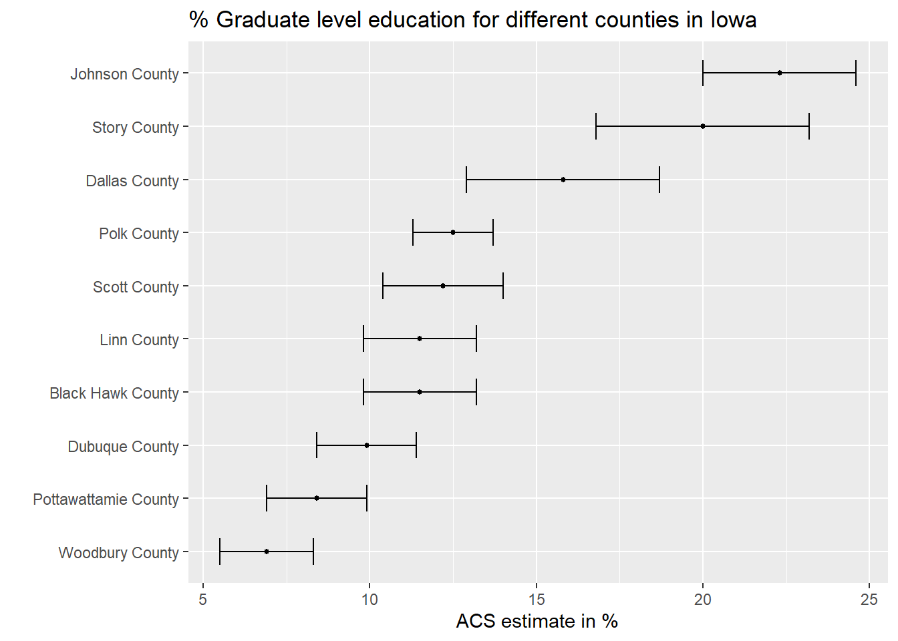

library(tidycensus)
vars <- load_variables(2021, "acs5")
View(vars)
grad_education<- get_acs(
geography = "county",
variables = "DP02_0066P",
year = 2021,
survey = "acs1" #<<
)
library(tidyverse)
arrange(grad_education,estimate)# A tibble: 841 × 5
GEOID NAME variable estimate moe
<chr> <chr> <chr> <dbl> <dbl>
1 22045 Iberia Parish, Louisiana DP02_0066P 1.7 0.9
2 48291 Liberty County, Texas DP02_0066P 2.4 1.3
3 06031 Kings County, California DP02_0066P 3.2 0.9
4 48427 Starr County, Texas DP02_0066P 3.3 2
5 06103 Tehama County, California DP02_0066P 3.4 1.4
6 26067 Ionia County, Michigan DP02_0066P 3.5 1.2
7 26117 Montcalm County, Michigan DP02_0066P 3.7 1.1
8 48213 Henderson County, Texas DP02_0066P 3.7 1.2
9 12107 Putnam County, Florida DP02_0066P 3.8 1.2
10 06025 Imperial County, California DP02_0066P 4.1 1.1
# ℹ 831 more rowsarrange(grad_education,desc(estimate))# A tibble: 841 × 5
GEOID NAME variable estimate moe
<chr> <chr> <chr> <dbl> <dbl>
1 51013 Arlington County, Virginia DP02_0066P 41.7 2
2 11001 District of Columbia, District of Columbia DP02_0066P 37.8 1.2
3 51510 Alexandria city, Virginia DP02_0066P 36 2.6
4 36109 Tompkins County, New York DP02_0066P 35.2 4
5 24027 Howard County, Maryland DP02_0066P 34.3 2.1
6 37135 Orange County, North Carolina DP02_0066P 34.2 2.7
7 24031 Montgomery County, Maryland DP02_0066P 33.8 0.9
8 51059 Fairfax County, Virginia DP02_0066P 32.2 0.8
9 51107 Loudoun County, Virginia DP02_0066P 30.7 1.4
10 25017 Middlesex County, Massachusetts DP02_0066P 29.9 0.8
# ℹ 831 more rowsgrad_education_Iowa <- grad_education%>%
separate(NAME, into = c("county", "state"), sep = ", ") %>%
filter(state == "Iowa") %>%
arrange(desc(estimate))
ggplot(grad_education_Iowa, aes(x = estimate,
y = reorder(county, estimate))) +
geom_errorbar(aes(xmin = estimate - moe, xmax = estimate + moe),
width = 0.5, linewidth = 0.5) +
labs(title = "% Graduate level education for different counties in Iowa",
x = "ACS estimate in %",
y = "")+
geom_point(size = 1)
library(plotly)
ggplotly(tooltip = "x")